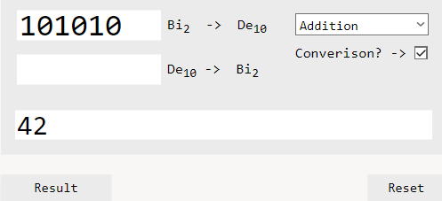

Binary Calculator Tool
A tool for calculating binary sums and converting between base2 and base10.
Functionality:
- Addition
- Subtraction
- Multiplication
- Division
- Decimal -> Binary
- Binary -> Decimal

Input box 1 and input box 2 are used in conjunction with each other for performing the four basic
operations. Aside from that the two input boxes are used independantly from each other when the "converion"
checkbox is ticked. This will alter the box functions to incorporate conversion depending on what box is populated.
If input box 1 contains a number (must be binary) it will output the decimal conversion of that number, and if
input box 2 contains a number (must be decimal) it will output the binary conversion of that number.
Example 1 - Addition:

Example 2 - Conversion:

If the user enters two numbers into both input 1 and 2, ticks conversion, and then clicks result, then it ill default
and convert the number in box 1 to decimal as it would result in a error.
Notes:
Does not work with decimal numbers